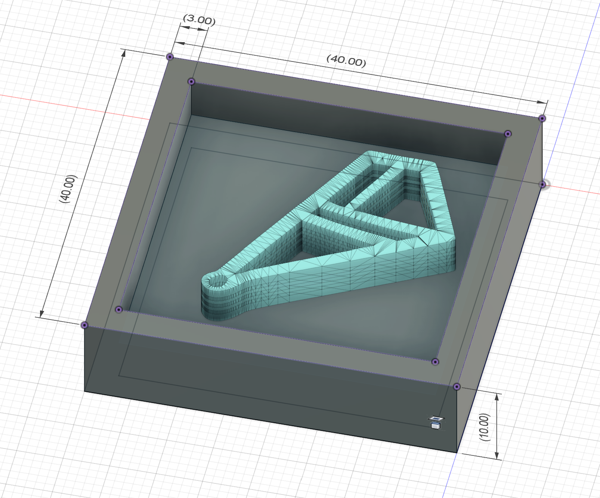

CNC Milling:
For my CNC milling part of the assigment, I chose to use the Roland SRM-20 CNC mill in order to make a mold for the casting half of the assignment. First, I made a simple model of a geometric shape, with 40mmx40mm walls surrounding the shape in order to make the mold.
Fig. 8.1: Model used for millling the wax mold
I then exported this model as an STL mesh, transferred it onto a USB drive, and loaded it into mods.cba.mit.edu for processing to make the G-Code for the mill. Meanwhile, I got myself a block of level wax with enough room for my model to fit. I attached it to the bed with doube sided tape to ensure it wouldn't fly off in the process. Once the G-Code was finished, I sent it over to the mill, and fired up the process.
Fig. 8.2: Milling process documentation and final product
Molding:
Now with the finished wax model, it was time to make a mold for casting. For my molding material, I used SortaClear 37, a silicone material for making molds. This material comes in two parts, and in order for it to set, I mixed equal parts of each by volume.
Fig. 8.3: Mixing sortaclear for casting
I then poured the silicone rubber into the mold and waited for it to set. I also tapped the mold on the table in order to get the excess air bubbles out. Once poured, the mixture took about 1 hour and 45 minutes to set.
Fig. 8.4: Poured silicone mold compared to wax mill
Now with the silicone mold finished, I decided to use plaster to make a cast of the molded shape. This plaster required 19 parts water for every 100 parts plaster, so in this case, I mixed 24 grams of plaster with ~4.5 grams of water.

Fig. 8.5: Mixing plaster for casting
I then poured the mixture into the silicone mold and let it set for about an hour. Here is the final result: